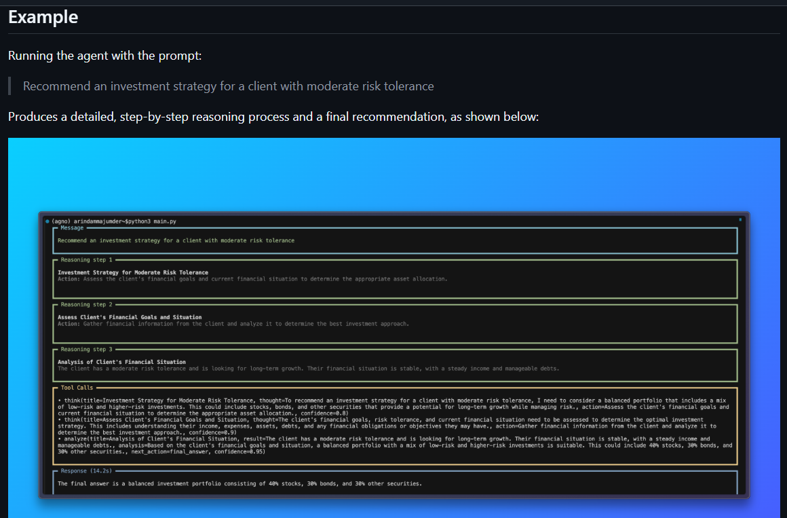

Clarify
Break the prompt into goals, risk tolerance, time horizon, liquidity needs, and missing variables.
Agno + Nebius + Llama 3.3
A transparent financial reasoning agent that turns complex investment questions into assumptions, tool-supported analysis, and balanced recommendations.
analysis tools
max reasoning steps
clean CLI entry point
Example output
The agent prints the user prompt, visible reasoning steps, tool calls, and the final recommendation in the terminal.

Workflow
Each answer follows a structured advisory flow so users can see how the recommendation was formed.
Break the prompt into goals, risk tolerance, time horizon, liquidity needs, and missing variables.
Use Python tools for risk profile scoring, allocation suggestions, and portfolio stress checks.
Compare growth potential, volatility, diversification, cash needs, rebalancing, and alternatives.
Return an educational recommendation with clear caveats and next steps for due diligence.
Usage
pip install -r requirements.txtNEBIUS_API_KEY=your_api_key_herepython main.py